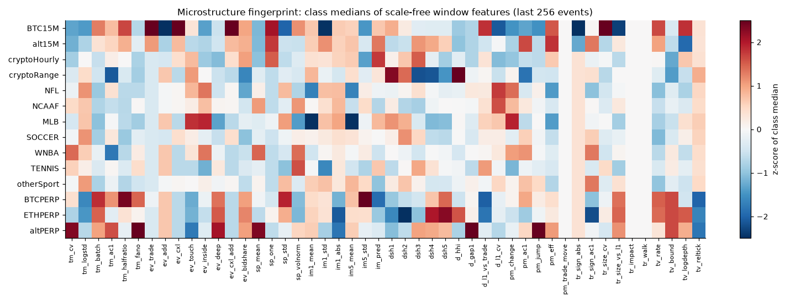
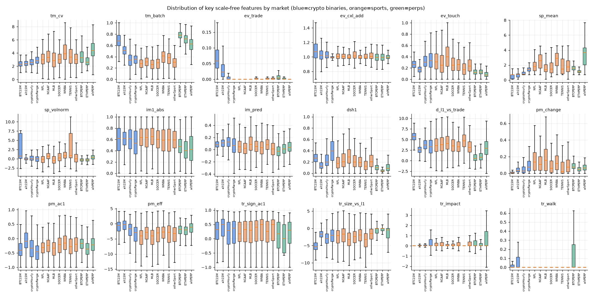
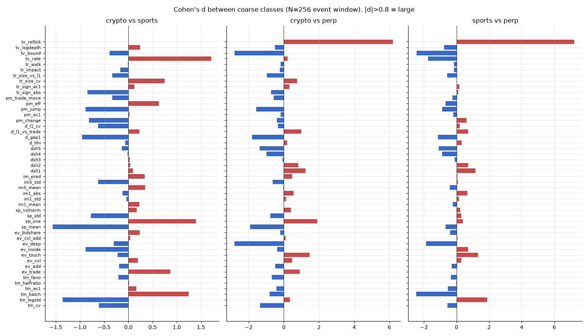
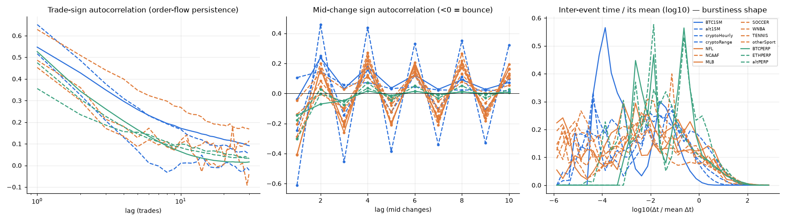
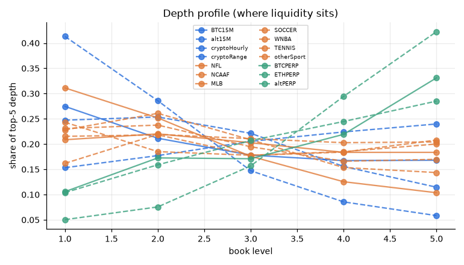
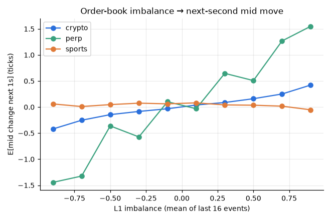
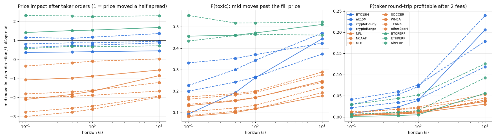
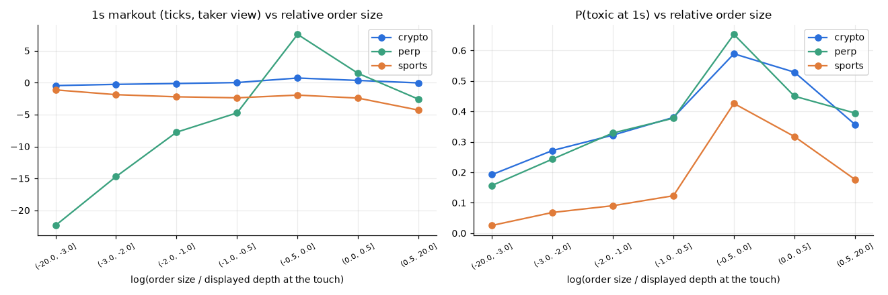

Classical microstructure
Plain statistics of the order book and order flow, computed with features that do not depend on volume, price level or tick size.
What we found
- Yes, crypto and sports books behave differently even after removing volume, price level and tick size. The biggest raw separator is event rate (BTC 15m vs sports d = 3.6), which is exactly the trivial difference we exclude; many differences remain without it.
- Timing. Crypto binaries and perps update in bursts: 68% of BTC 15m events and 63–78% of perp events arrive within 1 ms of the previous one, against 26–41% for sports. After dividing by each market's own mean gap, sports inter-arrival times are more irregular (CV 2.8–3.9 vs 2.3 for BTC 15m).
- The BTC 15m book churns without moving. Only 0.4% of its book events change the mid, against 6–16% in sports and 5–8% in perps. Its spread is one tick almost all the time, and it is wide relative to how far the mid actually travels (spread/volatility well above the sports median).
- Where liquidity sits. The touch holds 27% of top-5 depth in BTC 15m and 29% in MLB, but only 4–10% in perps, whose liquidity sits a few levels back.
- Order-book imbalance predicts the next second in crypto and perps, not in sports. Going from imbalance −0.9 to +0.9 shifts the expected 1 s mid move from −0.42 to +0.42 ticks in crypto and from −1.4 to +1.6 ticks in perps. In sports the curve is flat (within ±0.08 ticks): sports prices move on game events, not on queue pressure.
- Shared behaviour. Trade signs are persistent everywhere (lag-1 autocorrelation 0.45–0.65), which is consistent with order splitting, and the mid bounces everywhere (negative lag-1 autocorrelation of mid changes).
- Sports taker flow is mostly benign; perp flow is close to a coin flip. One second after a taker order the mid has moved past the fill price for 12–17% of sports orders, 26% of BTC 15m orders, 27–37% of other crypto binaries and about 47% of perp orders. After two taker fees and the exit spread, 21% of BTC 15m round trips are profitable at 10 s, against 3–5% in sports.
- The most toxic orders are the ones that exactly clear the touch (size ≈ displayed depth): 59% toxic in crypto, 65% in perps and 43% in sports, against 3–19% for small orders. Orders that follow a move of more than 3 ticks in the prior 10 s in their own direction are also more toxic (sports 30% vs 10% when the price was flat).
Data in this comparison
| market class | sampled windows | distinct market-days |
|---|---|---|
| NCAAF | 691,332 | 15,212 |
| NFL | 466,249 | 10,035 |
| MLB | 438,286 | 13,501 |
| BTC15M | 272,746 | 554 |
| SOCCER | 250,250 | 6,406 |
| alt15M | 244,591 | 1,672 |
| cryptoHourly | 241,860 | 4,598 |
| otherSport | 237,020 | 6,211 |
| cryptoRange | 158,891 | 3,030 |
| altPERP | 131,614 | 20 |
| WNBA | 75,761 | 1,909 |
| TENNIS | 32,389 | 789 |
| BTCPERP | 17,912 | 1 |
| ETHPERP | 17,911 | 1 |
Fingerprint



Order flow and price dynamics



What happens after a taker order


| class | taker orders | median spread (ticks) | fee/side (ticks) | P(toxic) 1s | P(toxic) 10s | P(net>0) 1s | P(net>0) 10s |
|---|---|---|---|---|---|---|---|
| BTC15M | 2,180,327 | 1.000 | 1.277 | 0.262 | 0.444 | 0.039 | 0.206 |
| alt15M | 1,299,925 | 1.000 | 0.941 | 0.344 | 0.471 | 0.072 | 0.240 |
| cryptoHourly | 707,624 | 1.000 | 0.988 | 0.266 | 0.373 | 0.042 | 0.119 |
| cryptoRange | 120,420 | 2.000 | 1.166 | 0.370 | 0.423 | 0.076 | 0.179 |
| NFL | 689,296 | 2.000 | 1.347 | 0.117 | 0.178 | 0.010 | 0.030 |
| NCAAF | 710,132 | 2.000 | 1.347 | 0.171 | 0.241 | 0.012 | 0.040 |
| MLB | 288,567 | 1.000 | 1.441 | 0.170 | 0.247 | 0.012 | 0.036 |
| SOCCER | 411,193 | 1.000 | 1.277 | 0.134 | 0.218 | 0.014 | 0.037 |
| WNBA | 56,162 | 2.000 | 1.497 | 0.119 | 0.192 | 0.009 | 0.040 |
| TENNIS | 155,494 | 1.000 | 1.201 | 0.199 | 0.289 | 0.024 | 0.053 |
| otherSport | 418,519 | 1.000 | 1.077 | 0.193 | 0.277 | 0.021 | 0.044 |
| BTCPERP | 24,000 | 3.000 | 16.325 | 0.471 | 0.511 | 0.005 | 0.056 |
| ETHPERP | 24,000 | 1.000 | 5.302 | 0.518 | 0.523 | 0.015 | 0.093 |
| altPERP | 247,632 | 17.000 | 8.756 | 0.465 | 0.461 | 0.052 | 0.126 |
Method
All three families are Kalshi markets recorded by the same collector: order-book deltas, snapshots and trades. For each market-day I rebuilt the top-5 book on both sides after every event. For binaries the NO bids are mapped to YES asks, so every market is on one bid/ask grid. Windows are the last N book events (N = 16, 64, 256, 1024) or the last W seconds (1, 10, 60, 600 s). Every feature is a ratio, share, correlation or normalised quantity: shares of event types, inter-event-time shape after dividing by its own mean, spread relative to realised volatility, depth shares by level, autocorrelations, impact per trade. A separate trivial group (event rate, absolute depth, price level/bound, relative tick size) is computed but kept out of every model unless a row says otherwise.